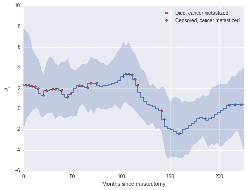

Bayesian Survival Analysis
Author: Austin Rochford
Survival analysis studies the distribution of the time to an event. Its applications span many fields across medicine, biology, engineering, and social science. This tutorial shows how to fit and analyze a Bayesian survival model in Python using pymc3.
We illustrate these concepts by analyzing a mastectomy data set from R's HSAUR package.
%matplotlib inline
from matplotlib import pyplot as plt
import numpy as np
import pymc3 as pm
from pymc3.distributions.timeseries import GaussianRandomWalk
import seaborn as sns
from statsmodels import datasets
from theano import tensor as T
Couldn't import dot_parser, loading of dot files will not be possible.
Fortunately, statsmodels.datasets makes it quite easy to load a number of data sets from R.
df = datasets.get_rdataset('mastectomy', 'HSAUR', cache=True).data
df.event = df.event.astype(np.int64)
df.metastized = (df.metastized == 'yes').astype(np.int64)
n_patients = df.shape[0]
patients = np.arange(n_patients)
df.head()
| time | event | metastized | |
|---|---|---|---|
| 0 | 23 | 1 | 0 |
| 1 | 47 | 1 | 0 |
| 2 | 69 | 1 | 0 |
| 3 | 70 | 0 | 0 |
| 4 | 100 | 0 | 0 |
n_patients
44
Each row represents observations from a woman diagnosed with breast cancer that underwent a mastectomy. The column time represents the time (in months) post-surgery that the woman was observed. The column event indicates whether or not the woman died during the observation period. The column metastized represents whether the cancer had metastized prior to surgery.
This tutorial analyzes the relationship between survival time post-mastectomy and whether or not the cancer had metastized.
A crash course in survival analysis
First we introduce a (very little) bit of theory. If the random variable
where
Solving this differential equation for the survival function shows that
This representation of the survival function shows that the cumulative hazard function
is an important quantity in survival analysis, since we may consicesly write
An important, but subtle, point in survival analysis is censoring. Even though the quantity we are interested in estimating is the time between surgery and death, we do not observe the death of every subject. At the point in time that we perform our analysis, some of our subjects will thankfully still be alive. In the case of our mastectomy study, df.event is one if the subject's death was observed (the observation is not censored) and is zero if the death was not observed (the observation is censored).
df.event.mean()
0.59090909090909094
Just over 40% of our observations are censored. We visualize the observed durations and indicate which observations are censored below.
fig, ax = plt.subplots(figsize=(8, 6))
blue, _, red = sns.color_palette()[:3]
ax.hlines(patients[df.event.values == 0], 0, df[df.event.values == 0].time,
color=blue, label='Censored');
ax.hlines(patients[df.event.values == 1], 0, df[df.event.values == 1].time,
color=red, label='Uncensored');
ax.scatter(df[df.metastized.values == 1].time, patients[df.metastized.values == 1],
color='k', zorder=10, label='Metastized');
ax.set_xlim(left=0);
ax.set_xlabel('Months since mastectomy');
ax.set_ylim(-0.25, n_patients + 0.25);
ax.legend(loc='center right');

When an observation is censored (df.event is zero), df.time is not the subject's survival time. All we can conclude from such a censored obsevation is that the subject's true survival time exceeds df.time.
This is enough basic surival analysis theory for the purposes of this tutorial; for a more extensive introduction, consult Aalen et al.^[Aalen, Odd, Ornulf Borgan, and Hakon Gjessing. Survival and event history analysis: a process point of view. Springer Science & Business Media, 2008.]
Bayesian proportional hazards model
The two most basic estimators in survial analysis are the Kaplan-Meier estimator of the survival function and the Nelson-Aalen estimator of the cumulative hazard function. However, since we want to understand the impact of metastization on survival time, a risk regression model is more appropriate. Perhaps the most commonly used risk regression model is Cox's proportional hazards model. In this model, if we have covariates
Here df.metastized.
Unlike in many regression situations,
If
In order to perform Bayesian inference with the Cox model, we must specify priors on
A suitable prior on
interval_length = 3
interval_bounds = np.arange(0, df.time.max() + interval_length + 1, interval_length)
n_intervals = interval_bounds.size - 1
intervals = np.arange(n_intervals)
We see how deaths and censored observations are distributed in these intervals.
fig, ax = plt.subplots(figsize=(8, 6))
ax.hist(df[df.event == 1].time.values, bins=interval_bounds,
color=red, alpha=0.5, lw=0,
label='Uncensored');
ax.hist(df[df.event == 0].time.values, bins=interval_bounds,
color=blue, alpha=0.5, lw=0,
label='Censored');
ax.set_xlim(0, interval_bounds[-1]);
ax.set_xlabel('Months since mastectomy');
ax.set_yticks([0, 1, 2, 3]);
ax.set_ylabel('Number of observations');
ax.legend();

With the prior distributions on pymc3. The key observation is that the piecewise-constant proportional hazard model is closely related to a Poisson regression model. (The models are not identical, but their likelihoods differ by a factor that depends only on the observed data and not the parameters
We define indicator variables based on whether or the
last_period = np.floor((df.time - 0.01) / interval_length)
death = np.zeros((n_patients, n_intervals))
death[patients, last_period] = df.event
We also define
exposure = np.greater_equal.outer(df.time, interval_bounds[:-1]) * interval_length
exposure[patients, last_period] = df.time - interval_bounds[last_period]
Finally, denote the risk incurred by the
We may approximate pymc3 model.
SEED = 5078864 # from random.org
with pm.Model() as model:
lambda0 = pm.Gamma('lambda0', 0.01, 0.01, shape=n_intervals)
sigma = pm.Uniform('sigma', 0., 10.)
tau = pm.Deterministic('tau', sigma**-2)
mu_beta = pm.Normal('mu_beta', 0., 10**-2)
beta = pm.Normal('beta', mu_beta, tau)
lambda_ = pm.Deterministic('lambda_', T.outer(T.exp(beta * df.metastized), lambda0))
mu = pm.Deterministic('mu', exposure * lambda_)
obs = pm.Poisson('obs', mu, observed=death)
We now sample from the model.
n_samples = 40000
burn = 20000
thin = 20
with model:
step = pm.Metropolis()
trace_ = pm.sample(n_samples, step, random_seed=SEED)
[-----------------100%-----------------] 40000 of 40000 complete in 44.2 sec
trace = trace_[burn::thin]
We see that the hazard rate for subjects whose cancer has metastized is about one and a half times the rate of those whose cancer has not metastized.
np.exp(trace['beta'].mean())
1.645592148084472
pm.traceplot(trace, vars=['beta']);

pm.autocorrplot(trace, varnames=['beta']);

We now examine the effect of metastization on both the cumulative hazard and on the survival function.
base_hazard = trace['lambda0']
met_hazard = trace['lambda0'] * np.exp(np.atleast_2d(trace['beta']).T)
def cum_hazard(hazard):
return (interval_length * hazard).cumsum(axis=-1)
def survival(hazard):
return np.exp(-cum_hazard(hazard))
def plot_with_hpd(x, hazard, f, ax, color=None, label=None, alpha=0.05):
mean = f(hazard.mean(axis=0))
percentiles = 100 * np.array([alpha / 2., 1. - alpha / 2.])
hpd = np.percentile(f(hazard), percentiles, axis=0)
ax.fill_between(x, hpd[0], hpd[1], color=color, alpha=0.25)
ax.step(x, mean, color=color, label=label);
fig, (hazard_ax, surv_ax) = plt.subplots(ncols=2, sharex=True, sharey=False, figsize=(16, 6))
plot_with_hpd(interval_bounds[:-1], base_hazard, cum_hazard,
hazard_ax, color=blue, label='Had not metastized')
plot_with_hpd(interval_bounds[:-1], met_hazard, cum_hazard,
hazard_ax, color=red, label='Metastized')
hazard_ax.set_xlim(0, df.time.max());
hazard_ax.set_xlabel('Months since mastectomy');
hazard_ax.set_ylabel(r'Cumulative hazard $\Lambda(t)$');
hazard_ax.legend(loc=2);
plot_with_hpd(interval_bounds[:-1], base_hazard, survival,
surv_ax, color=blue)
plot_with_hpd(interval_bounds[:-1], met_hazard, survival,
surv_ax, color=red)
surv_ax.set_xlim(0, df.time.max());
surv_ax.set_xlabel('Months since mastectomy');
surv_ax.set_ylabel('Survival function $S(t)$');
fig.suptitle('Bayesian survival model');

We see that the cumulative hazard for metastized subjects increases more rapidly initially (through about seventy months), after which it increases roughly in parallel with the baseline cumulative hazard.
These plots also show the pointwise 95% high posterior density interval for each function. One of the distinct advantages of the Bayesian model fit with pymc3 is the inherent quantification of uncertainty in our estimates.
Time varying effects
Another of the advantages of the model we have built is its flexibility. From the plots above, we may reasonable believe that the additional hazard due to metastization varies over time; it seems plausible that cancer that has metastized increases the hazard rate immediately after the mastectomy, but that the risk due to metastization decreases over time. We can accomodate this mechanism in our model by allowing the regression coefficients to vary over time. In the time-varying coefficent model, if
We implement this model in pymc3 as follows.
with pm.Model() as time_varying_model:
lambda0 = pm.Gamma('lambda0', 0.01, 0.01, shape=n_intervals)
beta = GaussianRandomWalk('beta', tau=1., shape=n_intervals)
lambda_ = pm.Deterministic('h', lambda0 * T.exp(T.outer(T.constant(df.metastized), beta)))
mu = pm.Deterministic('mu', exposure * lambda_)
obs = pm.Poisson('obs', mu, observed=death)
We proceed to sample from this model.
with time_varying_model:
step = pm.Metropolis()
time_varying_trace_ = pm.sample(n_samples, step, random_seed=SEED)
[-----------------100%-----------------] 40000 of 40000 complete in 49.3 sec
time_varying_trace = time_varying_trace_[burn::thin]
We see from the plot of
fig, ax = plt.subplots(figsize=(8, 6))
beta_hpd = np.percentile(time_varying_trace['beta'], [2.5, 97.5], axis=0)
beta_low = beta_hpd[0]
beta_high = beta_hpd[1]
ax.fill_between(interval_bounds[:-1], beta_low, beta_high,
color=blue, alpha=0.25);
beta_hat = time_varying_trace['beta'].mean(axis=0)
ax.step(interval_bounds[:-1], beta_hat, color=blue);
ax.scatter(interval_bounds[last_period[(df.event.values == 1) & (df.metastized == 1)]],
beta_hat[last_period[(df.event.values == 1) & (df.metastized == 1)]],
c=red, zorder=10, label='Died, cancer metastized');
ax.scatter(interval_bounds[last_period[(df.event.values == 0) & (df.metastized == 1)]],
beta_hat[last_period[(df.event.values == 0) & (df.metastized == 1)]],
c=blue, zorder=10, label='Censored, cancer metastized');
ax.set_xlim(0, df.time.max());
ax.set_xlabel('Months since mastectomy');
ax.set_ylabel(r'$\beta_j$');
ax.legend();

The coefficients
The change in our estimate of the cumulative hazard and survival functions due to time-varying effects is also quite apparent in the following plots.
tv_base_hazard = time_varying_trace['lambda0']
tv_met_hazard = time_varying_trace['lambda0'] * np.exp(np.atleast_2d(time_varying_trace['beta']))
fig, ax = plt.subplots(figsize=(8, 6))
ax.step(interval_bounds[:-1], cum_hazard(base_hazard.mean(axis=0)),
color=blue, label='Had not metastized');
ax.step(interval_bounds[:-1], cum_hazard(met_hazard.mean(axis=0)),
color=red, label='Metastized');
ax.step(interval_bounds[:-1], cum_hazard(tv_base_hazard.mean(axis=0)),
color=blue, linestyle='--', label='Had not metastized (time varying effect)');
ax.step(interval_bounds[:-1], cum_hazard(tv_met_hazard.mean(axis=0)),
color=red, linestyle='--', label='Metastized (time varying effect)');
ax.set_xlim(0, df.time.max() - 4);
ax.set_xlabel('Months since mastectomy');
ax.set_ylim(0, 2);
ax.set_ylabel(r'Cumulative hazard $\Lambda(t)$');
ax.legend(loc=2);

fig, (hazard_ax, surv_ax) = plt.subplots(ncols=2, sharex=True, sharey=False, figsize=(16, 6))
plot_with_hpd(interval_bounds[:-1], tv_base_hazard, cum_hazard,
hazard_ax, color=blue, label='Had not metastized')
plot_with_hpd(interval_bounds[:-1], tv_met_hazard, cum_hazard,
hazard_ax, color=red, label='Metastized')
hazard_ax.set_xlim(0, df.time.max());
hazard_ax.set_xlabel('Months since mastectomy');
hazard_ax.set_ylim(0, 2);
hazard_ax.set_ylabel(r'Cumulative hazard $\Lambda(t)$');
hazard_ax.legend(loc=2);
plot_with_hpd(interval_bounds[:-1], tv_base_hazard, survival,
surv_ax, color=blue)
plot_with_hpd(interval_bounds[:-1], tv_met_hazard, survival,
surv_ax, color=red)
surv_ax.set_xlim(0, df.time.max());
surv_ax.set_xlabel('Months since mastectomy');
surv_ax.set_ylabel('Survival function $S(t)$');
fig.suptitle('Bayesian survival model with time varying effects');

We have really only scratched the surface of both survival analysis and the Bayesian approach to survival analysis. More information on Bayesian survival analysis is available in Ibrahim et al.^[Ibrahim, Joseph G., Ming‐Hui Chen, and Debajyoti Sinha. Bayesian survival analysis. John Wiley & Sons, Ltd, 2005.] (For example, we may want to account for individual frailty in either or original or time-varying models.)
This tutorial is available as an IPython notebook here. It is adapted from a blog post that first appeared here.